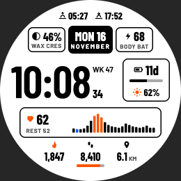
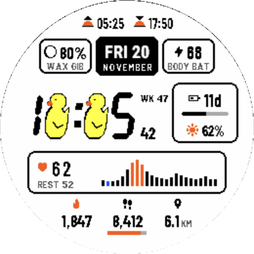
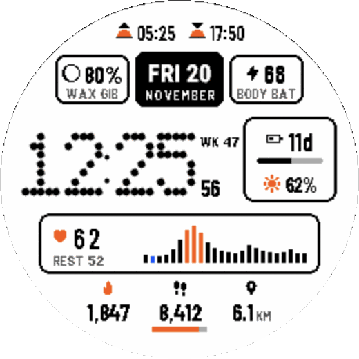

Instrument Panel¶
A production watch face for the Garmin fēnix 8 Solar, written in Monkey C, and the engineering behind it.
Instrument Panel is a Connect IQ watch face for a 260 × 260 px always-on memory-in-pixel (MIP) display with 64 colours. It was built from a written design spec in eight milestones, passed Garmin's review, and was published on the Connect IQ Store as version 1.0.0.
Get it on the Connect IQ Store Source on GitHub
These pages are about the code rather than the product. They document how a dense, always-on, data-heavy screen fits into a small memory budget and a strict power budget. They also cover the tooling built around the code to make design decisions measurable.



onUpdate() and onPartialUpdate()What is technically interesting here¶
-
A rendering pipeline that never allocates
Data is refreshed once a minute behind change keys and dirty flags. Each frame is pure drawing from cached strings, positions and colours. Object allocation is confined to layout, settings changes and a 10-minute sensor-history refresh.
-
Always-on seconds within a power budget
In low power the face redraws once a minute, and
onPartialUpdaterepaints only a clip rectangle around the seconds every second. The clip is sized from font metrics. If the watch reports a blown power budget, the face falls back cleanly. -
Memory as a first-class constraint
Glyph-subset bitmap fonts, run-length-encoded icons, flat constant tables, lazy loading of the one chosen time font, and debug code removed by build annotations. Memory was measured and recorded at every milestone.
-
A Python generator rasterises TTFs into BMFont atlases with three edge modes, fixed-width digits, whole-pixel letter spacing and hand-drawn replacement glyphs for 7 px digits that hinting could not render cleanly.
-
A slanted 7-segment display from hexagonal polygons and a bit-mask table, a dot-matrix font from 5-bit rows, and a rubber duck whose outline comes from a mitred polygon-offset algorithm, all precomputed and then translated without allocation.
-
Sensor data with honest fallbacks
Complications, sensor history, activity monitoring and system stats, each guarded with capability checks and given a documented fallback. The heart-rate graph buckets 4 hours of samples into 24 bars and adapts when the device keeps less history.
-
Tooling that makes design decisions measurable
A pixel-accurate preview renderer snaps candidate designs to the 64-colour palette and checks every option over all 1,440 minutes of the day before any Monkey C is written. A local API checker reads the SDK docs to confirm signatures, API levels and device support.
-
A spec-driven, milestone-based process
One written spec, eight milestones, a warning-free build after every change, simulator verification against mockups, and a decision log for every deviation from the spec.
Technology¶
| Area | Choice |
|---|---|
| Language | Monkey C, with strict type annotations (as Number, as Array<Float>, nullable ? types) |
| Platform | Garmin Connect IQ SDK 9.3, device API level 6.0, minApiLevel 4.2.1 |
| Target | fēnix 8 Solar 47mm (fenix8solar47mm): round 260 × 260 px MIP display, 64 colours, always on |
| Toybox modules | WatchUi, Graphics, Complications, SensorHistory, ActivityMonitor, UserProfile, System, Time, Application |
| Permissions | ComplicationSubscriber, SensorHistory, UserProfile (nothing else) |
| Tooling | Python 3 with Pillow and NumPy (font generation, design previews, docs figures), Bash build script |
| Fonts | Barlow, Barlow Condensed, Saira Condensed, Kalam (SIL Open Font License), converted to bitmap atlases |
| Distribution | Connect IQ Store, version 1.0.0 (tagged v1.0.0 in git) |
Where to start¶
- Short on time? Read the rendering pipeline and memory engineering. They show the main constraints and how the code works within them.
- Interested in algorithms? See ISO week numbers and moon phases, the heart-rate graph, and polygon offsetting for the duck outline.
- Interested in process? See milestones and the decision log.